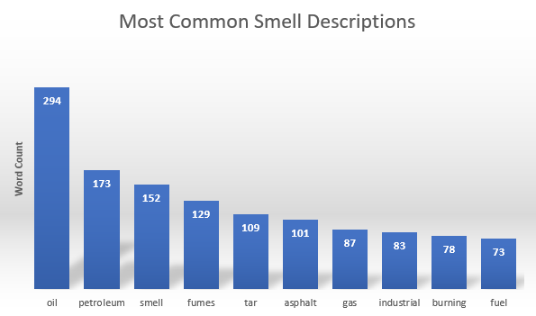
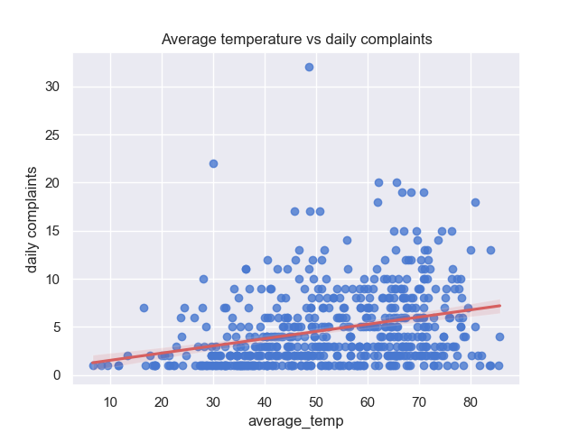
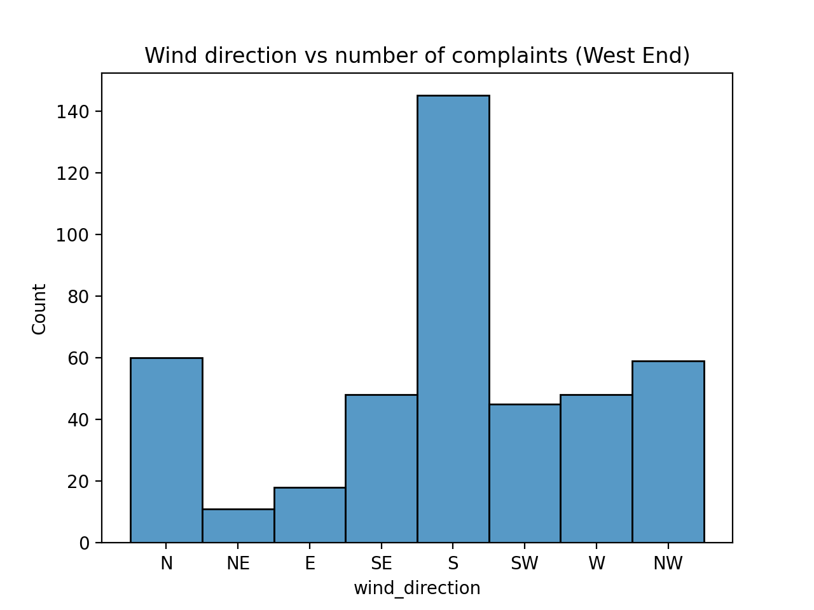

South Portland and Portland have been tracking these smell complaints since 2019. If you've been smelling something, you're not alone.
Residents in South Portland and Portland have often described strong neighborhood odors for years. These smells were frequently described as industrial in nature; given the large oil storage tanks nearby, local and state governments have been working to gauge the severity of the problem.
These cities have tracked thousands online smell complaints for this issue, logging the date, location, odor descriptions, and personal symptoms. You can visually explore this data for yourself below.
Each dot on the map above shows the location of a single complaint. The scatter plot below it acts as filter that lets you look for complaints within a certain time or wind direction. You can drag or resize the grey box on the scatter plot to change which complaints show above. Try making the filter short and wide to show complaints only on days when the wind is blowing in a single direction. If you move that filter up and down, you'll see an elevated number of complaints when the wind is blowing from 180 degrees. This is from the south, in the direction of South Portland's oil storage tanks.
Throughout thousands of complaints, several descriptions of the local smells are repeated often: "petroleum", "tar", "oil", "asphalt", "sulfur", "gas". Hundreds of the complaints also mention feeling nausea, throat irritation, and headaches.
The smells are reported most frequently along South Portland's northern coastline and throughout Portland's West End. There is a strong seasonal component to the complaints, which increase in the summer with higher temperatures.
The smells appear to correlate strongly with wind direction in some places. Inside Portland's West End, odor complaints are much likelier on days the wind is blowing from the south - i.e., the direction of South Portland's oil storage tanks. See the histogram below, which displays the number of complaints in the West End when the wind is blowing from each direction.
This space is reserved for further commentary pending conversation with the stakeholders.
Acknowledgements
Developed by data science students at The Roux Institute, Northeastern University.
Thank you to the Greater Portland Council of Governments (GPCOG) for the interesting project.
- Portland resident